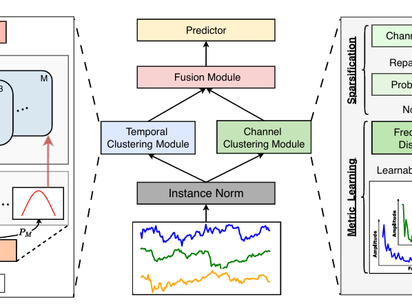
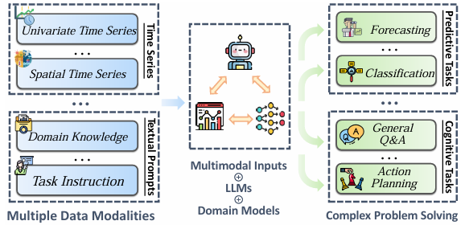

OpenTS-Deep Learning
ICML 2025
Spotlight

K2VAE: A Koopman-Kalman Enhanced Variational AutoEncoder for Probabilistic Time Series Forecasting
International Conference on Machine Learning (ICML), 2025.
ICLR 2025

CATCH: Channel-Aware Multivariate Time Series Anomaly Detection via Frequency Patching
International Conference on Learning Representations (ICLR), 2025.
ICLR 2025

Air-DualODE: Air Quality Prediction with Physics-guided Dual Neural ODEs in Open Systems.
International Conference on Learning Representations (ICLR), 2025.
SIGKDD 2025

DUET: Dual Clustering Enhanced Multivariate Time Series Forecasting
ACM Knowledge Discovery and Data Mining (SIGKDD), 2025.
SIGKDD 2025

MM-Path: Multi-modal, Multi-granularity Path Representation Learning
ACM Knowledge Discovery and Data Mining (SIGKDD), 2025.
CVPR 2025
Oral

Enhancing Diversity for Data-free Quantization
ACM Knowledge Discovery and Data Mining (SIGKDD), 2025.
ICDE 2025

Towards Lightweight Time Series Forecasting: a Patch-wise Transformer with Weak Data Enriching
International Conference on Data Engineering (ICDE), 2025.
ICLR 2024

Multi-scale Transformers with Adaptive Pathways for Time Series Forecasting
International Conference on Learning Representations (ICLR), 2024.
ICML 2024

Position: What Can Large Language Models Tell Us about Time Series Analysis
International Conference on Machine Learning (ICML), 2024.
PVLDB 2024

A Memory Guided Transformer for Time Series Forecasting
International Conference on Very Large Databases (PVLDB), 2024.
PVLDB 2024

Multiple Time Series Forecasting with Dynamic Graph Modeling.
International Conference on Very Large Databases (PVLDB), 2024.